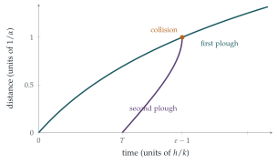

STEP III Specimen paper, Question 11
Read the question before you go on. It is in the STEP Support Programme’s question database: step.maths.org/questions/spec-s3-q11
The hook
Snow is falling steadily. A snowplough sets off down a road, slowing down as the snow it meets gets deeper. A second plough follows a little later along the cleared road. It meets only the snow that has fallen since the first plough passed, which is shallower, so it travels faster, and eventually it catches up. When?
This is a version of a famous problem published by Ralph Agnew in 1942, which became one of the best-known puzzles in differential equations. Its charm is that the second plough’s speed depends on when the first plough passed each point, so the solution to part (i) feeds into the equation for part (ii). And the equation is cleverest when written “upside down”, with time as a function of distance.
Before you start
The first plough meets snow of depth \(h + kt\) at time \(t\). What is its speed? Is it easier to find \(x\) as a function of \(t\), or \(t\) as a function of \(x\)?
Its speed is \(\frac{\mathrm{d}x}{\mathrm{d}t} = \frac{k}{\alpha(h + kt)}\). This separates neatly. Turning it over, \(\frac{\mathrm{d}t}{\mathrm{d}x} = \frac{\alpha(h + kt)}{k}\), which is a simple linear equation for \(t\) as a function of \(x\). Either way works for the first plough; for the second, the upside-down form is essential.
Working it through
Stage 1 The first plough
From \(\frac{\mathrm{d}t}{\mathrm{d}x} = \alpha\bigl(\frac hk + t\bigr)\), the quantity \(\frac hk + t\) grows exponentially in \(x\): \(\frac hk + t = Ce^{\alpha x}\). At \(x = 0\), \(t = 0\), so \(C = \frac hk\) and \[t_1(x) = \frac hk\bigl(e^{\alpha x} - 1\bigr). \qed\] The first plough slows down exponentially: equal distances take exponentially increasing times.
Stage 2 The second plough’s equation
The second plough reaches position \(y\) at time \(t\). How deep is the snow there? (What was the depth just after the first plough passed?)
The first plough cleared all the snow at position \(y\) at time \(t_1(y)\). Since then, snow has accumulated at rate \(k\), so the depth at time \(t\) is \(z = k\bigl(t - t_1(y)\bigr)\). The second plough’s speed is therefore \[\frac{\mathrm{d}y}{\mathrm{d}t} = \frac{k}{\alpha k\bigl(t - t_1(y)\bigr)} = \frac{1}{\alpha\bigl(t - t_1(y)\bigr)},\] and turning it over, \[\frac1\alpha\frac{\mathrm{d}t}{\mathrm{d}y} = t - \frac hk\bigl(e^{\alpha y} - 1\bigr). \qed\]
Stage 3 Solving
This is linear in \(t\): \(\frac{\mathrm{d}t}{\mathrm{d}y} - \alpha t = -\frac{\alpha h}{k}(e^{\alpha y} - 1)\). What integrating factor works? What is the starting condition?
Multiplying by \(e^{-\alpha y}\), \[\frac{\mathrm{d}}{\mathrm{d}y}\bigl(te^{-\alpha y}\bigr) = -\frac{\alpha h}{k}\bigl(1 - e^{-\alpha y}\bigr), \qquad te^{-\alpha y} = -\frac{\alpha h}{k}y - \frac hke^{-\alpha y} + C.\] The second plough starts at \(y = 0\) at \(t = T\), so \(T = -\frac hk + C\), giving \(C = T + \frac hk\). Multiplying back by \(e^{\alpha y}\) and rearranging, \[t_2(y) = \frac hk\bigl(e^{\alpha y} - 1\bigr) + \Bigl(T - \frac{\alpha hy}{k}\Bigr)e^{\alpha y}. \qed\] (To verify, as the question asks: differentiate and substitute; the terms combine to \(\alpha\bigl(t - t_1(y)\bigr)\).)
Stage 4 The collision
The ploughs collide when both reach the same point at the same time. Compare \(t_2(y)\) with \(t_1(y)\).
The difference is \(t_2(y) - t_1(y) = \bigl(T - \frac{\alpha hy}{k}\bigr)e^{\alpha y}\), the time gap between the two ploughs at position \(y\). It shrinks to zero when \[y = \frac{kT}{\alpha h}. \qed\] At that point the second plough reaches the first: the snow in front of it has zero depth, and in the model its speed becomes infinite (Figure 11.13.1).

Looking back
Turn the equation upside down. With \(t\) as a function of position, both equations were linear.
One solution feeds the next. The first plough’s timetable \(t_1(y)\) appeared in the second plough’s equation.
Compare, do not solve twice. The collision condition came from the difference \(t_2 - t_1\), which had a simple factor.
What’s really going on
Agnew’s snowplough
In Ralph Palmer Agnew’s version, from his 1942 textbook Differential Equations, it starts snowing heavily and steadily one morning; a snowplough sets out at noon and covers \(2\) miles in the first hour and \(1\) mile in the second; when did it start snowing? The plough’s speed is inversely proportional to the depth, which is proportional to the time since the snow started. The answer (an exercise below) involves the golden ratio: it started snowing about \(37\) minutes before noon. Versions with two ploughs, like this question, followed.
Information that travels
The second plough’s motion depends on the history recorded in the road: the time at which each point was last cleared. This is a simple example of a system with memory, in which the state at one place depends on what happened there earlier. Traffic flow, the motion of glaciers and the spreading of a forest fire all have this character, and their mathematics, the theory of first-order partial differential equations and their characteristics, is a standard second-year topic. The idea of writing time as a function of position (“when does the front arrive here?”) is exactly the method of arrival times used for such problems.
The thinking skill
A differential equation may be much simpler with the roles of the variables reversed. If the rate depends on the time at which something happened at a place, write time as a function of place.
Both equations here became linear when written for \(t(y)\). At university, the freedom to choose which variable is independent (and to change it when convenient) is used constantly, from the hodograph method in fluid mechanics to the use of arc length as a parameter in geometry.
Try this next
Agnew’s problem. Snow starts falling at a steady rate at an unknown time before noon. A snowplough whose speed is inversely proportional to the depth starts at noon and goes \(2\) miles in the first hour and \(1\) mile in the second. Show that if it started snowing \(t_0\) hours before noon, then \(\bigl(1 + \frac{2}{t_0}\bigr)^2 = \bigl(1 + \frac{1}{t_0}\bigr)^3\), deduce that \(\frac{1}{t_0}\) is the golden ratio, and find when it started snowing.
Verification. Verify by differentiation that \(t_2(y)\) satisfies the differential equation of part (ii).
The time gap. Show that if \(kT > h\), the time gap \(t_2(y) - t_1(y)\) first increases and then decreases to zero, and find where it is greatest. What happens if \(kT \leq h\)? Interpret this.
Three ploughs. A third plough starts at time \(2T\). Write down the equation for its motion. Does it catch the second plough before or after the second catches the first?
Further reading
Ralph Palmer Agnew, Differential Equations (McGraw-Hill, 1942). The original snowplough problem.
George Simmons, Differential Equations with Applications and Historical Notes (CRC Press), which discusses the snowplough problem among many others.
Richard Haberman, Mathematical Models (SIAM). Traffic flow and characteristics, at an accessible level.